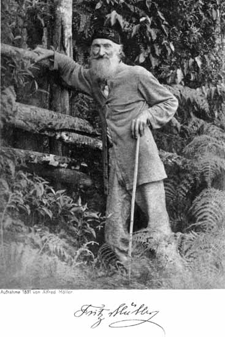
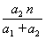
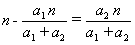
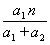
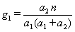

Fritz
Müller in 1891
|  |
- Major early
Darwinian and frequent correspondent with Darwin
- Extraordinarily
gifted naturalist
- Radical atheist who
emigrated from Germany to Brazil to avoid religious strictures in
German universities
- Published
many papers on life history, morphology, systematics, and evolution
of plants, marine invertebrates, as well as butterflies, ants, termites
and other insects
- Published a spirited,
if somewhat learned book as a defence of Darwin's theory of evolution
based on his knowledge, including evidence of cladistic phylogeny,
of marine Crustacean (Müller F. 1864. Für Darwin. Verlag
von Wilhelm Engelmann, Leipzig). Darwin was most pleased with this
book, and ensured it was translated into English (published 1869,
entitled "Facts and Arguments for Darwin").
- Discovered that special
nutritious bodies (today known as Müllerian bodies) produced
at the bases of petioles of Cecropia leaves are fed on by
ants engaged in mutualistic defence of these plants
- Proved that mimicry between pairs
of unpalatable species, now called Müllerian mimicry, could
be adaptive
Müller’s "number-dependent" model
of mimicry In
perhaps the earliest application of mathematical arguments to evolution,
Müller in 1879
showed not only that each member of a pair of unpalatable species
could benefit from mimicry, but also that the ratio of advantages
for mimicry was greatly in favour of the rarer species -- in proportion
to the square of the ratio of relative abundances (a1,a2).
Müller had earlier explained his idea in a brief note in 1878
(see translation), using a numerical example. Müller
assumed that both species are equally unpalatable (the number taken
during learning, n, thus represents degree of palatability
in Müller's treatment); however, the results also hold for unequal
palatabilities (see Mallet 1999. Causes and consequences of a lack
of coevolution in Müllerian mimicry. Evol Ecol 13: 777-806. REPRINT).
|
This is certainly the first precise model
of frequency-dependent selection of any sort.
Müller's mimicry theory also models an Allee effect (a density-dependent effect
which
becomes more deleterious as density declines), as well as an example of a
mutualism
(mutually beneficial symbiosis). Müller's treatment must surely
be
the first mathematical treatment of each of these topics, and it appears to be the first
mathematical
treatment of any evolutionary or ecological topic in a Darwinian
framework.
I quote from the footnote in F. Müller. 1879.
Ituna and Thyridia; a remarkable case of mimicry in butterflies.
Transactions of the Entomological Society of London, 1879, xx-xxix (transl.
by Ralph Meldola from the original German article in Kosmos, May 1879,
p. 100) - (see scanned pdf reprint.
For a high resolution copy, see: http://www.archive.org/stream/transactionsofen1879roya#page/17/mode/thumb
-- and reading this, I now realize it's in the Proceedings, not the Transactions
-- very tricky page numbering!):
Let a1 and a2 be the numbers
of two distasteful species of butterflies in some definite district
during one summer, and let n be the number of individuals of a
distinct species which are destroyed in the course of a summer before
its distastefulness is generally known. If both species are totally
dissimilar, then each loses n individuals. If, however, they
are undistinguishably similar, then the first loses and the
second .
The absolute gain [in numbers] by resemblance is therefore for the
first species ; and in a similar manner for the second, . This
absolute gain, compared with the occurrence of the species, gives for
the first, , and for the second species,  [g1 and g2
are the per capita fitness advantages of Müllerian mimicry
once it has gone to completion], whence follows the proportion, g1:g2
= a22:a12.
[g1 and g2
are the per capita fitness advantages of Müllerian mimicry
once it has gone to completion], whence follows the proportion, g1:g2
= a22:a12.
Ralph Meldola later
reported to Darwin that the reception of this paper, which he had read
in translation at the Entomological Society, had been lukewarm (even by
Henry
Walter Bates, who in 1862 himself had recognized mimicry between
rare unpalatable species and commoner models). Meldola wrote:
"...In fact, I do not think anyone grasped the line of argument through
inability to follow the simple algebraic reasoning which Fritz Müller has adopted."
Biographical
publications
Möller, Alfred (1920):
Fritz
Müller. Werke, Briefe und Leben. Dritter Band. Fritz
Müllers
Leben, nach den Quellen bearbeitet vom Herausgeber. Gustav Fischer,
Jena.
(163 pages + 1 frontspiece of Muller in 1891 (see above photo), 6
plates
-- including portraits of Müller -- and one map). This is the
third
part of a 3-part set, started 1915. The earlier parts contain
copies of all Müller's papers and much correspondence.
West, David A. (2003). Fritz Müller.
A Naturalist in Brazil. Pocahantas Press. Blacksburg, Virginia.
vii+376 pp. This is the first English language biography, and is
heavily based on Alfred Möller's (1920) work. Book review by J. Mallet.
Book review by Mark
Carey.
West, D.A. (2016). Darwin's Man in Brazil: The Evolving Science of Fritz Müller. Gainesville, Florida, University Press of Florida. This book was published soon after David West's death. After his book of 2003 David and his wife did much additional research, including more study of Müller's correspondence with Darwin. Google
See also:
- 1897. Nature 56:546-548.
- 1898. Rev. Mus. paulista 3:17-29.
- 1898. An. Soc. cient. argent. 45:5-13.
- 1929. Bol. Mus. nac. R. Janeiro
5(2):1-23.
For a complete list of Fritz Müller's
(also his brother Wilhelm's) publications on Neotropical butterflies,
see:
Lamas, Gerardo (1995)
Bibliography
on Neotropical Butterflies. Atlas of Neotropical Lepidoptera Vol.
124.
(I am grateful to Gerardo Lamas for
supplying information in this section).
Back to Portraits
Back to Jim
Mallet Home Page